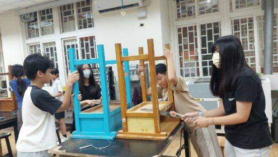
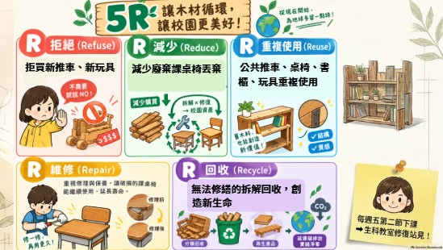
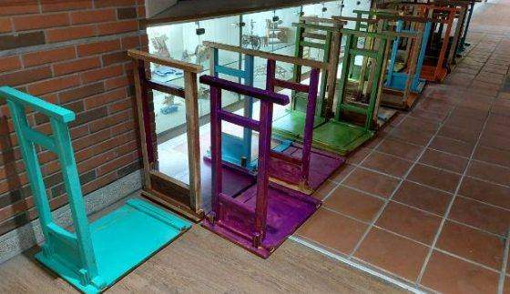
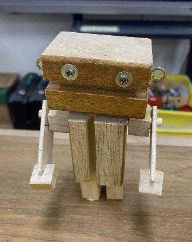
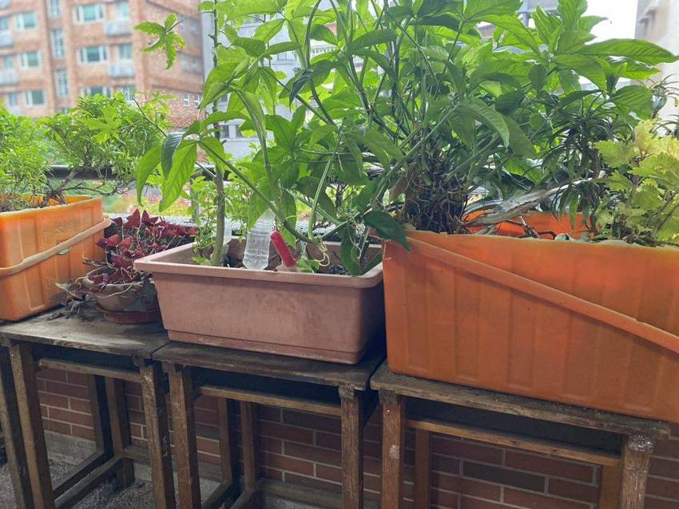

Reduce 減量
延長家具使用時間，減少新材料與廢棄物。
選擇你想做的事，前往相關資料或表單。

校園汰換桌椅時，有些家具只需補強就能繼續使用；有些拆下來的木料與五金，也仍然完好。若直接清運，材料離開校園，資源也就此中斷。
「木語重生」從生活科技課程出發，邀請學生成立修復站，學習判斷、修繕與再設計，讓廢棄課桌椅重新回到校園日常。
我們以 5R 原則落實 SDG 12「責任消費與生產」，依材料狀況選擇最合適的下一步：能修就修，不能修再拆解重製。
延長家具使用時間，減少新材料與廢棄物。
修復結構、補漆砂磨，讓課桌椅回到工作崗位。
拆解分類木板、木條與五金，成為新作品材料。
重新思考「壞了就丟」的習慣，減少一次性汰換。
讓自然材料回到循環，也為校園生態留一席之地。

先判斷家具能否修復，再依狀況分類材料、動手改造，最後交回校園持續使用。
檢查接合、螺絲與桌面，重新黏合鎖固、補洞上漆。
能修復，就繼續使用拆下可用木料與五金，依點、線、面整理收納。
完整材料，妥善保存觀察手邊材料，製作推車、木偶、蜂巢與花台。
讓創意回應材料作品進入班級與校園，讓大家一起借用、維護。
回到生活，繼續循環材料狀況與尺寸各不相同，團隊依用途選擇設計，讓每一段木料都找到適合的新位置。

保留桌椅結構並加裝輪子，方便搬運課本、午餐與回收物。改良版製作更省時、穩定，也能快速推廣。

把不同形狀的木塊組合成手作角色，讓學生從材料觀察開始，練習設計、裁切、鑽孔與組裝。

以合適木料製作蜂巢，並把修繕後的桌子改為花台，讓資源循環與校園生態在同一處發生。
暑假期間製作 65 台簡易推車，各班配置一台；師生也能在共用停車區借用，搬運教科書與日常物品。
修理、整理材料、製作和分享，每一次實作都讓校園裡的循環更完整。點選照片可放大檢視。
每張照片記錄一個階段：從動手修繕，到把新作品帶回校園使用。
我們希望把修復、分享與再利用變成校園習慣，並將再生家具與木作故事帶進社區，讓材料的價值持續流動。
從推車設計、5R 行動到校園共享，整理計畫中常被問到的問題。
學校過去需要花費經費清運汰換的桌椅，團隊先判斷能否修復；無法原樣使用的，再拆解材料、改造成 65 台校園推車，分送各班搬運教科書、午餐與回收物，讓材料重新服務校園。
第一代仿照市售推車拆解重組，程序較繁複，長時間推動後也容易鬆動。第二代保留完整課桌椅的結構，只在桌腳加裝輪子，減少鋸切與組裝工序，製作更省時、穩定，也較容易量產。
Reduce 減少課桌椅報廢、Reuse 修復後再使用、Recycle 拆解木料再製推車與木偶、Refuse 拒絕一次性浪費、Rot 讓材料回歸自然或作為生態利用。這些行動呼應 SDG 12「責任消費與生產」。
材料依「點、線、面」整理：點是螺絲與五金零件，線是椅腳與長條木，面是桌板與座墊。學校空間有限，因此會盡快把材料活化再利用，製作木偶、推車或蜂窩，減少堆放。
學生在生活科技教師指導下操作，先檢查螺絲鏽蝕、木板裂痕等狀況，再使用固定夾協助加工。製作獨居蜂窩鑽孔時，也會控制鑽孔深度，降低木材破裂與操作風險。
各班有專屬推車，校內另規劃共用推車停放區並製作管理表單。透過樓層公告與啟動活動，推廣定點停放、定時維護、有借有還，讓推車成為大家共用的校園資源。
團隊挑選狀況良好的廢棄桌腳，清潔、砂磨並鑽孔製作獨居蜂窩，放置於教務處外花台旁。這讓木料再利用延伸到校園生態觀察與生物多樣性關懷。
團隊預計結合 12 月校慶舉辦「藝起耍廢，我最靚」成果展，展示七年級生活科技課程製作的木偶與廢材作品，透過作品介紹與同儕票選，邀請全校一起珍惜資源、樂於修復。
計畫規劃「鷺中媒合據點」，讓修復穩固的木椅提供社區認領，也希望把廢木料再製故事畫成繪本，並逐步建立校園與社區間的家具媒合平台，讓資源持續流動。
從材料檢查、砂磨、上漆到組裝，學會結構固定與安全工藝，也透過實際解決校園搬運與廢棄物問題，體會「做中學」、零廢棄和環境行動的價值。
團隊將持續維護共享推車、擴充獨居蜂棲地、舉辦木偶與廢材作品展，並整理推車管理表單、再生木作教案與 DIY 教材，讓校園循環行動逐步延伸到社區。